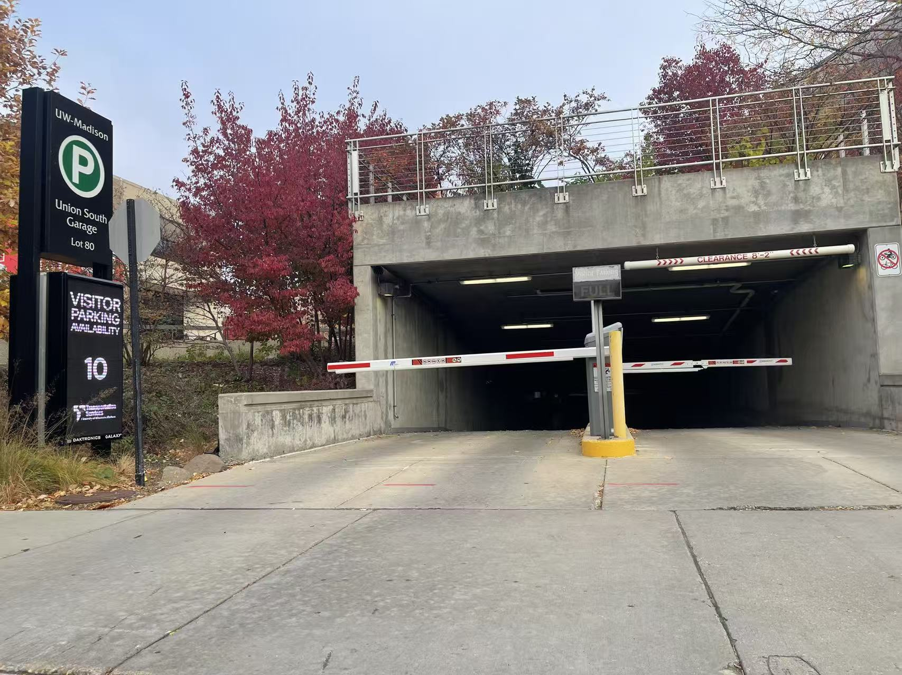
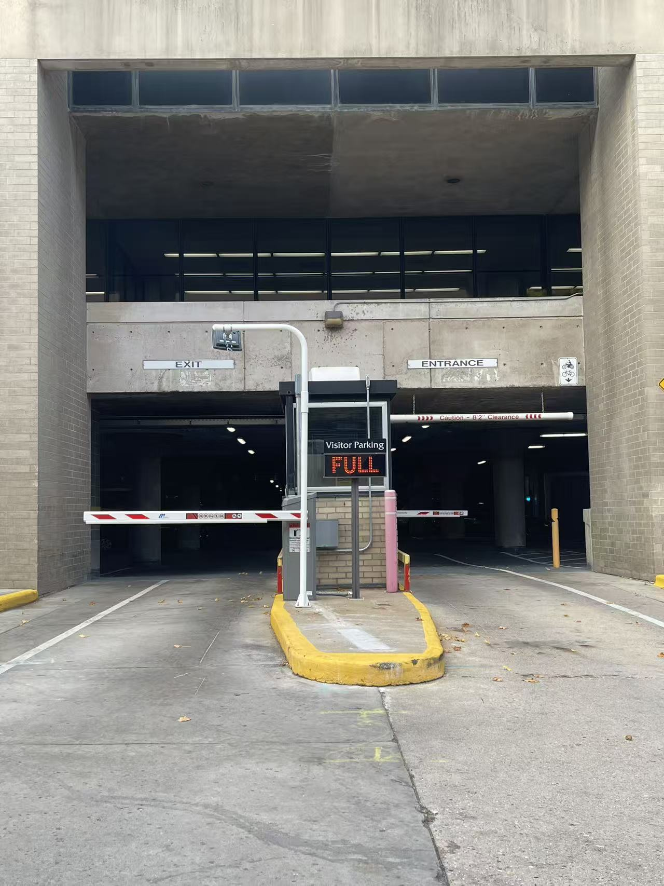
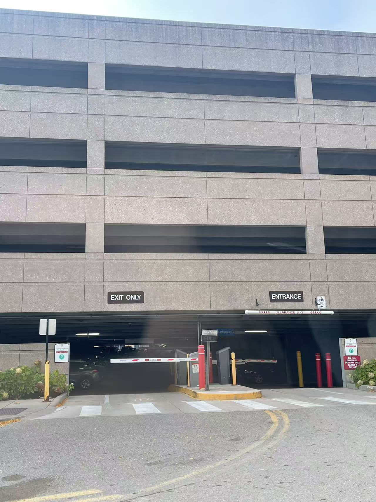

Lot A - Union Garage
Visitor parking allowed. Students can park after 5 PM. There is an hourly fee. Height limit 6'8".
- Location
- 700 Union Ave
- Permit Rules
- Visitor + Student (after 5 PM)
Lot B - Science Hall Lot
Mostly for faculty/staff permits during the day. After 4 PM it is easier to find a spot.
- Location
- 100 Science Dr
- Permit Rules
- Faculty/Staff permit 7 AM – 4 PM
Lot C - Stadium Lot
Big lot by the stadium. Good for night classes. On game days it fills up early.
- Location
- 20 Stadium Loop
- Permit Rules
- General parking after 6 PM